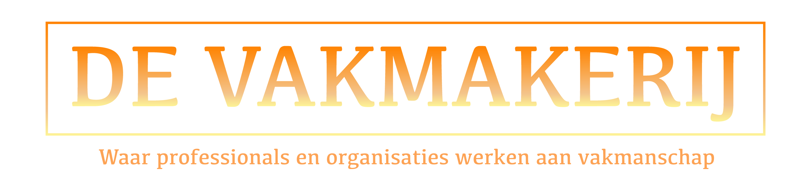
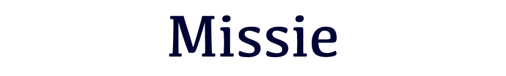
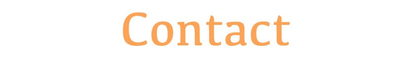

<!DOCTYPE html>
<html>

<head>
  <title>De Vakmakerij</title>
  <link rel="stylesheet" href="scripts/newstyle.css">

link rel="stylesheet" href="https://www.w3schools.com/w3css/4/w3.css">
  <!-- <  <link rel="stylesheet" href="https://fonts.googleapis.com/css?family=Lato"> -->
  <!-- <link rel="stylesheet" href="https://cdnjs.cloudflare.com/ajax/libs/font-awesome/4.7.0/css/font-awesome.min.css"> -->
  <style>

  </style>
</head>
<ul>
  <li><a href="#home">Home</a></li>
  <li><a href="#vision">Visie</a></li>
  <li><a href="#mission">Missie</a></li>
  <li><a href="#procedures">Werkwijze</a></li>
  <li><a href="#contact">Contact</a></li>
  <!-- <li><a href="mailto:someone@example.com?cc=someoneelse@example.com&bcc=andsomeoneelse@example.com&subject=Summer%20Party&body=You%20are%20invited%20to%20a%20big%20summer%20party!">Mail</a></li> -->
  <!-- <li style="float:right"><a class="active" href="#about">About</a></li> -->
</ul>

<body>
  <div class="firstlight" id="home">
    
    <br>
    <p>
      De Vakmakerij is een initiatief opgestart tijdens mijn studie Industrial Design aan de Technische Universiteit Eindhoven
      om sociaal-maatschappelijke onderwerpen te ondersteunen met <a class="one" href="https://www.satis-action.nl">Satis-action</a> en de genetwerkte manier van samenwerken te verspreiden is De Vakmakerij opgericht.

      De Vakmakerij verzorgt trainingen voor de procesregisseur, begeleidt workshops in specifieke casussen en ontwerpt interactieve tools om processen te ondersteunen.
      De Vakmakerij heeft geen winstoogmerk en werkt met een vooraf overeengekomen vergoeding.

      <!-- Gedurende mijn masterstudie worden mijn ontwerpen en ontwikkeling als designer gepubliceerd.
      Naast een portfolio is deze website ook een ingang voor personen, professionals en organisaties voor samenwerking met mijn onderneming, De Vakmakerij. -->
    </p>
  </div>

  <div class="dark" id="vision">
    <p>
      
      <br>
      Onze welvaart is de laatste honderd jaar enorm gestegen, dit is een groot goed maar de nadelige kosten voor deze welvaart worden steeds meer zichtbaar. Ons afval is een plastic soep dobberend op de oceaan en voor ons eten en drinken worden
      oerwouden gekapt waardoor de natuur bedreigd wordt. Om goedkoop chocolade of suiker te verkrijgen werken slaven, kinderen en volwassenen onder erbarmelijke omstandigheden in landen ver van ons vandaan. De economische welvaart wordt niet
      rechtvaardig verdeeld. Een mens lijkt enkel tot onze groep te behoren als zij voldoen aan onze normen, waardoor grote groepen mensen worden uitgesloten door onze instituties en onze maatschappij.
      <br>
      Een duurzame ontwikkeling van individuen, groepen, communities en gemeenschappen is volgens een studie van de Verenigde Naties nodig om te komen tot een ontwikkeling van gemeenschappen die oog heeft voor elkaar en onze toekomstige generaties.
    </p>
  </div>

  <div class="light" id="mission">
    <p>
      
      <br>
      Ge&iuml;nspireerd door deze Sustainable Development en de Human Scale Development wil De Vakmakerij bijdragen aan het duurzaam ontwikkelen van communities en gemeenschappen. Dit kan enkel door samenwerking tussen individuen en organisaties die
      boven hun belangen durven uit te stijgen. Samenwerken aan een gemeenschappelijke doel waarbij harmonie is binnen en tussen de economische, ecologische en sociale pilaren die een duurzamen ontwikkeling ondersteunen.
    </p>
  </div>

  <div class="dark" id="procedures">
    <p>
      
      <br>
      De Vakmakerij steunt individuen, professionals en organisaties in het ontwikkelen van talenten en vaardigheden die passen bij een genetwerkte manier van samenwerken. Dit doen we op strategisch, management en uitvoerend niveau van het
      samenwerkingsverband.
      <br><br>
      In een ori&euml;nterend gesprek verkennen we het probleem, de context en vraag in uw specifieke situatie. Daarbij wordt ondermeer gebruik gemaakt van de Satis-Action methode, een gereedschap voor interactie binnen het samenwerkingsverband in
      complexe situaties.


    </p>
  </div>

  <div class="lastlight" id="contact">
    <p>
      
      <br><br>
      <a href="mailto:devakmakerij@gmail.com?&subject=Bericht%20via%20website">
        
      </a>
    </p>
    <!-- <div class="">
    <form action="" class="">
      <label for="fname">Naam</label>
      <input class="input" type="text" id="fname" name="firstname" placeholder="Uw naam..">

      <label for="lname">E-mail adres</label>
      <input class="input" type="text" id="lname" name="lastname" placeholder="Uw mailadres..">

      <label for="subject">Bericht</label>
      <textarea class="input" id="subject" name="subject" placeholder="Uw bericht aan De Vakmakerij.." style="height:200px"></textarea>

      <input class="btn" type="submit" value="">
    </form>
  </div> -->
  </div>


  </div>

  <!-- Footer -->
  <!-- <footer class="w3-container w3-padding-64 w3-center w3-opacity w3-light-grey w3-xlarge">
  <i class="fa fa-facebook-official w3-hover-opacity"></i>
  <i class="fa fa-instagram w3-hover-opacity"></i>
  <i class="fa fa-snapchat w3-hover-opacity"></i>
  <i class="fa fa-pinterest-p w3-hover-opacity"></i>
  <i class="fa fa-twitter w3-hover-opacity"></i>
  <i class="fa fa-linkedin w3-hover-opacity"></i>
  <p class="w3-medium">Powered by <a href="https://www.w3schools.com/w3css/default.asp" target="_blank">w3.css</a></p>
</footer> -->

  <script>
    // Used to toggle the menu on small screens when clicking on the menu button
    function myFunction() {
      var x = document.getElementById("navDemo");
      if (x.className.indexOf("w3-show") == -1) {
        x.className += " w3-show";
      } else {
        x.className = x.className.replace(" w3-show", "");
      }
    }

    // When the user clicks anywhere outside of the modal, close it
    var modal = document.getElementById('ticketModal');
    window.onclick = function(event) {
      if (event.target == modal) {
        modal.style.display = "none";
      }
    }
  </script>


</body>

</html>
